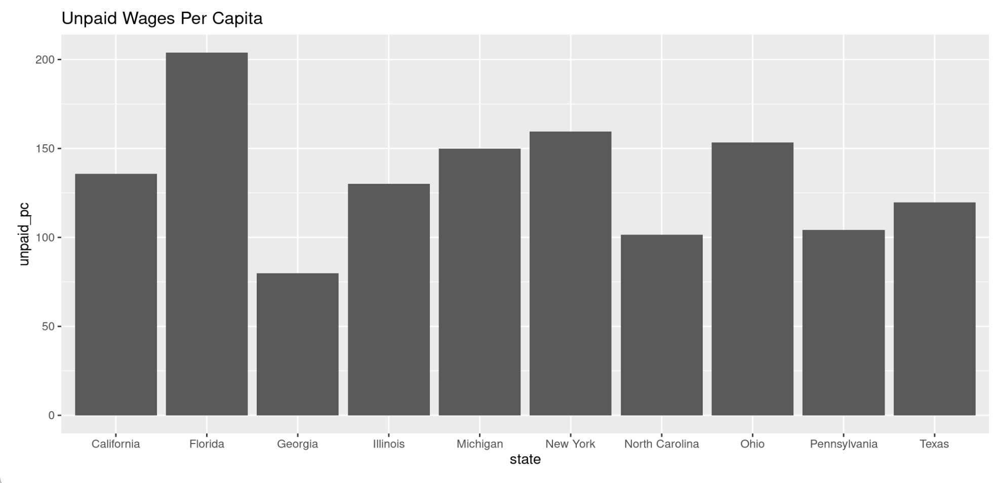
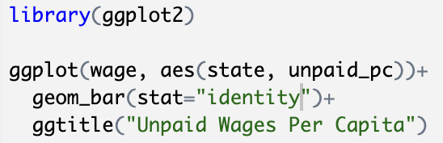

A 2017 study, reported by David Cooper and Teresa Kroeger, analyzes the unjust minimum wage violations in the ten most populous states: California, Florida, Georgia, Illinois, Michigan, New York, North Carolina, Ohio, Pennsylvania, and Texas. The findings show the severity of wage theft and unjust pay across the country, including the fact that there are over $8 billion per year in underpayment of wages (in these ten states alone), along with the fact that minority workers, specifically young people, women, people of color in general, and immigrants, are more likely than other demographic groups to be paid less than minimum wage. The study’s process of data collection is definitely ethical. In order for data collection to be ethical, the people conducting the study must work to ensure that all participants are comfortable and aren’t at risk of emotional harm. Additionally, enough information on the study should be provided to allow the participants an understanding of what they are committing to, but not enough to allow them to be partial and biased. The households interviewed in this study were required to give consent beforehand, and the survey itself was entirely optional. Additionally, the US Bureau of Labor Statistics worked hard to ensure that the data collected was representative of the entire population. I think that any time data is collected, there are unethical ways it can be used. Specifically, it can be misrepresented and distorted to support a certain viewpoint. I believe that it would be difficult to do this with these results, however. This is because the data was collected with the purpose of supporting a humanitarian cause, and the only reasonable response is to work harder to enforce workers in the United States get paid the wages they deserve. I believe that we can conclude whether or not data is being collected ethically by how much information regarding the methods and procedures of the data collection is given. A truly ethical process of data collection should be entirely transparent. Additionally, in order for data collection to be ethical, the population that it’s provided insights on must be represented proportionally and accurately. Data scientists have a lot of power in today’s society, given that they are required at every level of every field. This means that data scientists also have great responsibilities. These responsibilities include being as transparent as possible about their processes for collecting and analyzing data, as well as working to provide insights that can be used to combat injustice and oppression, which are present everywhere in the world. To analyze the data collected and given in the article, I wanted to create a data visualization showing the annual amount of unpaid wages per capita in each of the ten most populous states. I did so in RStudio, and have included the final bar graph, along with the necessary code. My findings suggest that Florida is the worst offender when it comes to selling laborers short.

